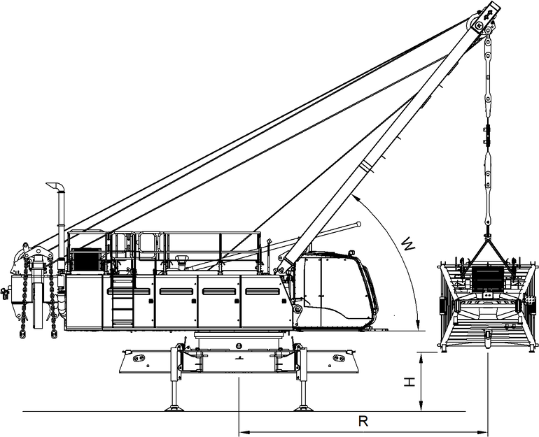

Hauptausleger-Anlenkstück anschlagen und heben
Sicherstellen, dass folgende Voraussetzungen erfüllt sind:
❑ | Zulässige Anschlagmittel sind vorhanden (Weitere Informationen siehe: „Anschlagmittel“). |
Wenn keine Nadelausleger-Verstellwinde am Hauptausleger-Anlenkstück montiert ist, müssen die Anschlagpunkte B verwendet werden.
Wenn eine Nadelausleger-Verstellwinde am Hauptausleger-Anlenkstück montiert ist, müssen die Anschlagpunkte A verwendet werden.
Abhängig von den Anschlagpunkten müssen unterschiedliche Anschlagmittel eingesetzt werden.

Fig. 4622: Grenzwerte - Hauptausleger-Anlenkstück heben
Fig. 4622: Grenzwerte - Hauptausleger-Anlenkstück heben
Mit Nadelausleger-Verstellwinde | |||
|---|---|---|---|
W | H | R | Anschlagpunkte |
44,5° | 0 mm 0 in | 7000 mm 22.97 ft | A |
55,5° | 1000 mm 3.28 ft | 5750 mm 18.86 ft | A |
59,5° | 1280 mm 4.2 ft | 5500 mm 18.04 ft | A |
62,5° | 1500 mm 4.92 ft | 5100 mm 16.73 ft | A |
65° | 1700 mm 5.58 ft | 4850 mm 15.91 ft | A |
Grenzwerte - Hauptausleger-Anlenkstück heben (mit Nadelausleger-Verstellwinde)
Ohne Nadelausleger-Verstellwinde | |||
|---|---|---|---|
W | H | R | Anschlagpunkte |
33° | 0 mm 0 in | 7990 mm 26.21 ft | B |
48° | 1000 mm 3.28 ft | 6740 mm 22.11 ft | B |
50° | 1272 mm 4.17 ft | 6470 mm 21.23 ft | B |
53° | 1500 mm 4.92 ft | 6200 mm 20.34 ft | B |
55° | 1700 mm 5.58 ft | 5970 mm 19.59 ft | B |
Grenzwerte - Hauptausleger-Anlenkstück heben (ohne Nadelausleger-Verstellwinde)
A-Bock1 soweit ablassen, dass Anschlagmittel am Hauptausleger-Anlenkstück angeschlagen werden können. |
Bolzen bei Anschlagpunkte (mit Nadelausleger-Verstellwinde) A oder Anschlagpunkte (ohne Nadelausleger-Verstellwinde) B einsetzen und gleichzeitig Anschlagmittel einhängen. |
Hauptausleger-Anlenkstück ist an Grundseil 1 angeschlagen. |
Hauptausleger-Anlenkstück an Grundseil des A-Bock1 anschlagen. |
WARNUNG
Schwebende Last und Schwenken der Maschine!
Tod, Quetschen der Gliedmaßen.
Sicherstellen, dass keine Personen im Gefahrenbereich sind. |
ACHTUNG
Schwingendes Hauptausleger-Anlenkstück!
Beschädigung der Kabine.
Sicherstellen, dass Helfer Hauptausleger-Anlenkstück beim Anbau führt. |
Hauptausleger-Anlenkstück heben. |
Hauptausleger-Anlenkstück vor Oberwagen drehen und positionieren. |